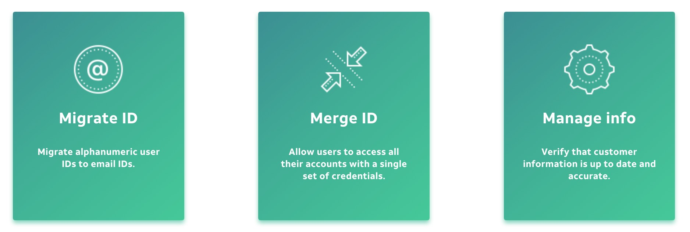
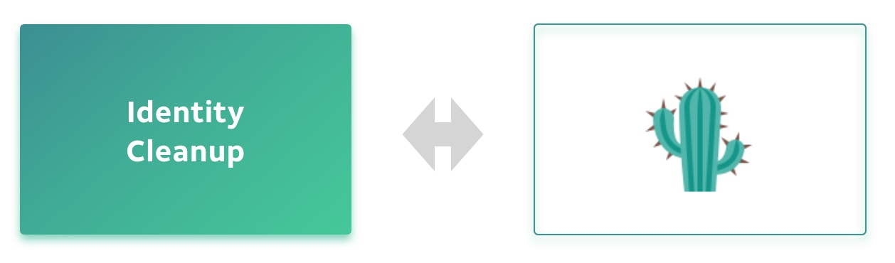
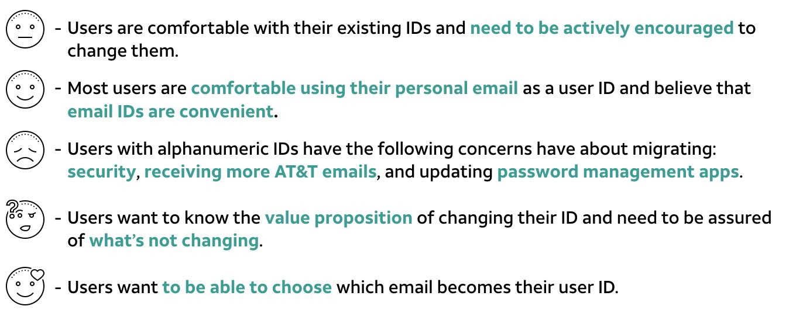
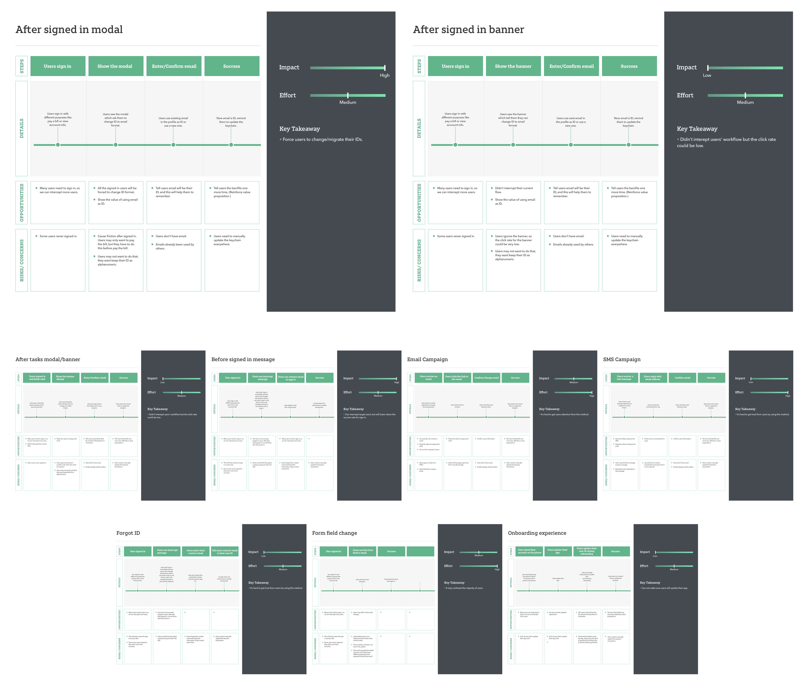
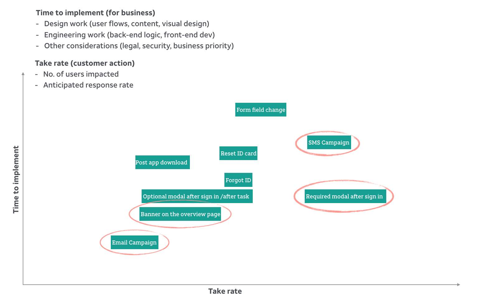
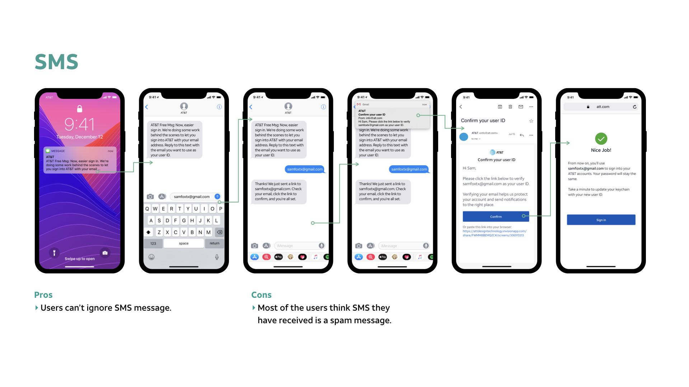
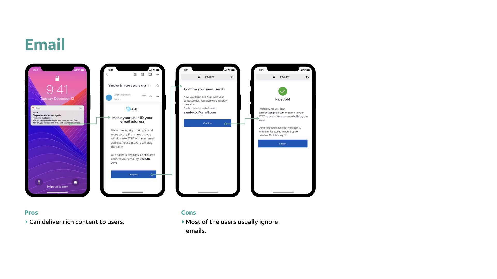
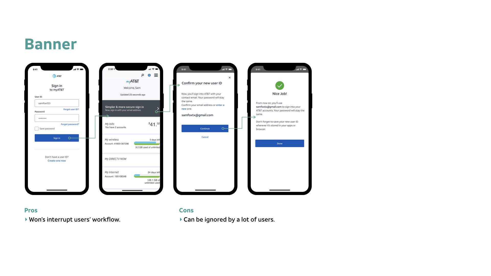
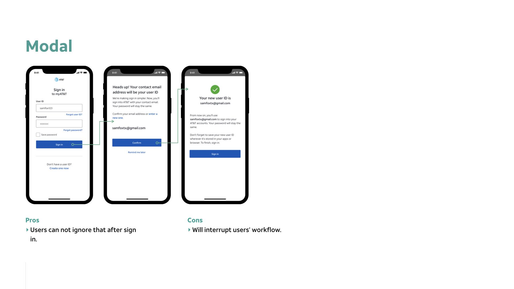
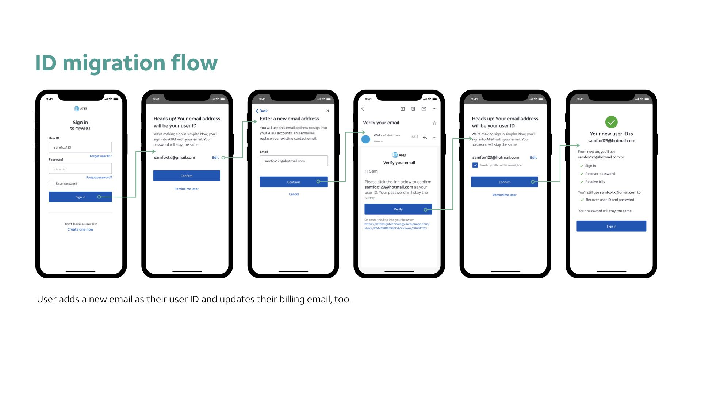

ID migration is a project changing users alphanumeric IDs to email IDs. For example, if a user ID is abc123, we want to change it to abc123@gmail.com.
Why we need ID migration?
To better manage the user's identity, our strategy is to make sure users have simple and secure online access. Because of a lot of legacy issues, there a lot of identity cleanup works need to be done. ID migration is a big part of identity clean up.

The project

Identity clean up can take a very long time to finish. If we want to use a plant to symbolized it, it’s more like a prickly pear which can really stand up to the test of time and the elements. So we also called identity clean up as project prickly pear.
For this project, my responsibility is in charge of all the design works including wireframe, prototypes and all the design-related handoffs.
Design and research Round 1
What we know
For the first round research, we have done 3 workshops with stakeholders and team members and we have received 45 survey responses from target users. We want to know what would be a good way to let users change their ID. Here are some findings from research.

What we propose
We came up with almost 10 different ideas to do the ID migration. I created user journeys for different ideas to see which ideas are worth to try.

Design and research Round 2
What we know
We analyzed those different ideas based on the take rate and time to implement. SMS, email, banner and modal interstitials are 4 four concepts get higher score in the matrix.

What we propose
We focused on 4 major concepts and tested that with users.




Design and research Round 3
What we propose
After several rounds of discussion with stakeholders and test with users, we decided to focus on modal interstitials to make sure we can have high take rates. To smooth the users' workflow, the modal allows users to ignore twice and if they ignore that they will receive a banner and email reminder after a specific amount of time.

TO BE CONTINUED
The last round ID migration testing got very good feedback from users. Most of the users think it’s a simple process to update their ID. But they do worry about the effort to update their new ID everywhere like a password manager, different devices/browsers. Our next step is to follow up with the sign-in team to figure out how users can update their new ID smoothly. The last round design also got buy-in from the stakeholder and leadership team. They all feel this is the right direction and right way to achieve our business goals. ID migration was planned to be built in Q2 2020.